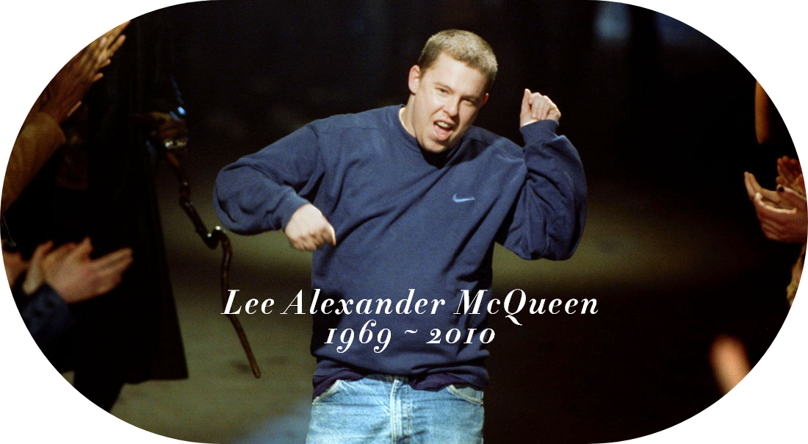
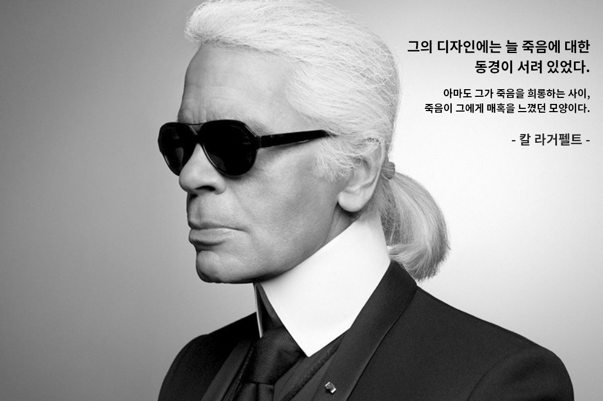

PHILOSOPHY

“패션에서 쇼는 사람들을 생각하게 만들어야 한다.
패션쇼가 감정을 불러일으키지 못한다면 아무 소용이 없다”
패션쇼가 감정을 불러일으키지 못한다면 아무 소용이 없다”
전설, 혁명가, 앙팡테리블.
파격과 매혹으로 패션계를 전율시킨 세계적인 디자이너.
알프레드 히치콕의 <싸이코> 부터 마틴 스콜세지 <택시 드라이버>까지
거장들의 걸작을 런웨이 위에 화려하게 부활시키며
패션을 예술의 경지로 끌어올린 아티스트.
황홀하고, 문제적이며, 내면에 자리한 고독한 비극이
마치 본인의 디자인과도 닮아있던,
알프레드 히치콕의 <싸이코> 부터 마틴 스콜세지 <택시 드라이버>까지
거장들의 걸작을 런웨이 위에 화려하게 부활시키며
패션을 예술의 경지로 끌어올린 아티스트.
황홀하고, 문제적이며, 내면에 자리한 고독한 비극이
마치 본인의 디자인과도 닮아있던,
천재 디자이너 알렉산더 맥퀸
그의 패션쇼는 사람들에게 불괘함과 같은 여러 감정을 남겼으며
맥퀸은 그것을 즐겼다.
왜 그는 쇼에 이런 감정을 담았는가??
지금부터 그의 작품철학에 대하여 알아보자.
#1. Death
그가 죽음을 바라보는 방법

그의 대학 졸업작품 'Jake The Ripper'나 그의 초기 컬렉션 작품들을 보면 피가 흐르는 듯 한 옷의 표현, 여성을 피해자로 표현한 듯한 디자인 등 초기 McQueen의 작품들은 관객들에게 불편함과 충격을 안겨준다. 이로인해 여러 메스컴에선 그를 여성혐오자라고 비판하였고 비난 받았다. 그는 왜 이러한 옷들을 보여주었을까?
이에 대한 배경은 McQueen의 8살 무렵으로 거스른다. 자신의 큰누나가 매형에게 죽기 직전까지 맞는 장면을 본 McQueen은 그때부터 자신의 주위에 죽음이 가까이 있구나를 깨닫는다. 그리고 죽음에 가까이 있는 사람들은 언제나 피해자들, 약자들이었다는 생각을 한다. 그렇기에 그가 디자인한 의상들은 언제나 자신의 주위에 자리잡고 있는 죽음이라는 현실을 적나라하게 표현하는 하나의 목소리였던 것이다. 그리고 이 목소리(옷)들을 사람들 앞에 들려 줌으로써 자신이 마주 본 이 끔찍한 죽음을 극복하고 희롱하는 하였던 것이다. 단지 옷을 통하여 사람들에게 죽음은 언제나 우리 주위에 있다는 것을 쇼를 통하여 보여주었고, 그것에 불편함과 충격을 느끼는 것은 어쩌면 당연한 일이다.
이에 대한 배경은 McQueen의 8살 무렵으로 거스른다. 자신의 큰누나가 매형에게 죽기 직전까지 맞는 장면을 본 McQueen은 그때부터 자신의 주위에 죽음이 가까이 있구나를 깨닫는다. 그리고 죽음에 가까이 있는 사람들은 언제나 피해자들, 약자들이었다는 생각을 한다. 그렇기에 그가 디자인한 의상들은 언제나 자신의 주위에 자리잡고 있는 죽음이라는 현실을 적나라하게 표현하는 하나의 목소리였던 것이다. 그리고 이 목소리(옷)들을 사람들 앞에 들려 줌으로써 자신이 마주 본 이 끔찍한 죽음을 극복하고 희롱하는 하였던 것이다. 단지 옷을 통하여 사람들에게 죽음은 언제나 우리 주위에 있다는 것을 쇼를 통하여 보여주었고, 그것에 불편함과 충격을 느끼는 것은 어쩌면 당연한 일이다.
#2. Feelings
그의 쇼를 감상하는 방법
그의 쇼를 본 사람들은 하나같이 입을 모아 "마치 한편의 영화를 보는 듯 하다."고 말한다. 그의 쇼를 패션쇼로 바라보아야 할 것인지 의문이라는 사람들도 많이 있다. 그럼 그의 쇼를 어떻게 바라보아야 할까?
McQueen이 처음 Givenchy하우스에 왔을 때, 그 곳에 있던 디자이너들은 기겁을 하였다. 그들의 만든 옷을 자도 안대고 거침없이 잘라 수정하는 McQueen을 보았기 때문이다. 명품 옷들을 다루는 사람들에겐 섬세함이 생명이다. 단 1mm의 오차도 그들에겐 허용되지 않는다. 하지만 McQueen은 오직 자신의 감으로 때려 맞추며 디자인을 수정하였기 때문에 반발 또한 적지 않았다. 그러자 McQueen은 이렇게 말하였다. "단지 옷인데 뭐 어때요?" 그렇다. 그는 패션디자이너이지만 옷을 별로 중요하게 생각하지 않는다. McQueen에게 옷이란 단지 자신의 세계를 표현하는 붓이다. 그렇기에 McQueen은 쇼를 관람하는 사람들이 항상 쇼를 보고 난 이후 '감정'을 느꼈으면 좋겠다고 말한다. 그렇기에 우리들은 McQueen의 쇼를 볼 때 옷이 아닌 McQueen이라는 사람 자체를 더욱 집중해서 그의 세계를 봐야한다.
McQueen이 처음 Givenchy하우스에 왔을 때, 그 곳에 있던 디자이너들은 기겁을 하였다. 그들의 만든 옷을 자도 안대고 거침없이 잘라 수정하는 McQueen을 보았기 때문이다. 명품 옷들을 다루는 사람들에겐 섬세함이 생명이다. 단 1mm의 오차도 그들에겐 허용되지 않는다. 하지만 McQueen은 오직 자신의 감으로 때려 맞추며 디자인을 수정하였기 때문에 반발 또한 적지 않았다. 그러자 McQueen은 이렇게 말하였다. "단지 옷인데 뭐 어때요?" 그렇다. 그는 패션디자이너이지만 옷을 별로 중요하게 생각하지 않는다. McQueen에게 옷이란 단지 자신의 세계를 표현하는 붓이다. 그렇기에 McQueen은 쇼를 관람하는 사람들이 항상 쇼를 보고 난 이후 '감정'을 느꼈으면 좋겠다고 말한다. 그렇기에 우리들은 McQueen의 쇼를 볼 때 옷이 아닌 McQueen이라는 사람 자체를 더욱 집중해서 그의 세계를 봐야한다.
#3. Memory
그를 기억하는 방법
그가 세상을 떠난 지 10년이 넘는 세월이 흘렀다. 하지만 그가 남긴 작품들은 아직도 많은 이들에게 영감과 자극을 주고 있으며 그가 이룬 업적은 사람들의 기억속에 남아 아직도 많은 이들의 입에서 회자되고 있다. 그를 추억하기 위해서 우리들은 어떤 생각을 가져야 할까?
그가 세상을 떠났을 당시 많은 유명인사들은 그를 여러가지 방식으로 추모하였으며 팝스타 레이디 가가도 그의 죽음을 애도하며 노래를 바치었다. McQueen의 브랜드는 지금 그가 생전, 그의 브랜드의 인턴이었던 Sarah Burton이 이어가고 있다. 또한 2018년 개봉한 영화 'McQueen'은 그의 생을 다큐멘터리 형식으로 보여주어 사람들에게 다시금 McQueen을 추억할 수 있는 기회를 만들었고 국내에도 Alexander McQueen의 브랜드 전시는 매년 이어지고 있다. 창립자인 McQueen은 지금 이 세상에 없지만 그의 이름은 누군가의 라벨로 남아 영원히 기억될 것 이다.
그가 세상을 떠났을 당시 많은 유명인사들은 그를 여러가지 방식으로 추모하였으며 팝스타 레이디 가가도 그의 죽음을 애도하며 노래를 바치었다. McQueen의 브랜드는 지금 그가 생전, 그의 브랜드의 인턴이었던 Sarah Burton이 이어가고 있다. 또한 2018년 개봉한 영화 'McQueen'은 그의 생을 다큐멘터리 형식으로 보여주어 사람들에게 다시금 McQueen을 추억할 수 있는 기회를 만들었고 국내에도 Alexander McQueen의 브랜드 전시는 매년 이어지고 있다. 창립자인 McQueen은 지금 이 세상에 없지만 그의 이름은 누군가의 라벨로 남아 영원히 기억될 것 이다.